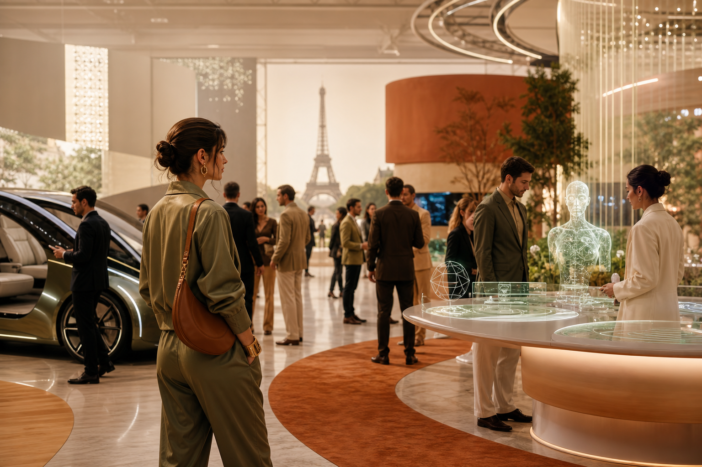

Published / 2026.06.21
旅館自助入住一定要買大型 Kiosk 嗎？iPad 自助櫃檯的成本與流程比較
對許多旅館與民宿來說，自助入住不一定要從大型 kiosk 開始。iPad 自助櫃檯能先解決資料確認、付款、QR Code 與通行流程，降低硬體成本與維護壓力。
Technology / Culture / Future Living
Cellbedell Blog 觀察科技、設計、時尚、新創、生活方式與未來城市。像翻一本介於《WIRED》、《Monocle》與《Wallpaper》之間的筆記，把國際趨勢整理成讀者看得懂，也能帶回日常的靈感。

Latest Article
Published / 2026.06.21
對許多旅館與民宿來說，自助入住不一定要從大型 kiosk 開始。iPad 自助櫃檯能先解決資料確認、付款、QR Code 與通行流程，降低硬體成本與維護壓力。
VivaTech Dispatch
06.21
AI 搜尋讓品牌與飯店不只要經營官網和 SEO，也要整理能被 AI 理解、引用與信任的資料。
閱讀文章06.20
展會最後一天之後，最值得追的不是單一酷炫產品，而是 AI agent、開放模型、即時翻譯、永續基礎建設與品牌科技如何真的進入日常流程。
閱讀文章06.19
系列首篇總覽 VivaTech 2026 的 5 個方向與值得記住的法國新創。
閱讀文章Next
有新的展會素材、旅宿科技案例或國際媒體觀點時，就可以從後台新增文章。
準備中Series Home
從巴黎科技展出發，替你挑出 AI、新創、品牌與未來生活裡值得收藏的靈感。每篇都像一張靈感明信片，帶你看見科技如何慢慢走進日常。
查看系列總覽Newsletter